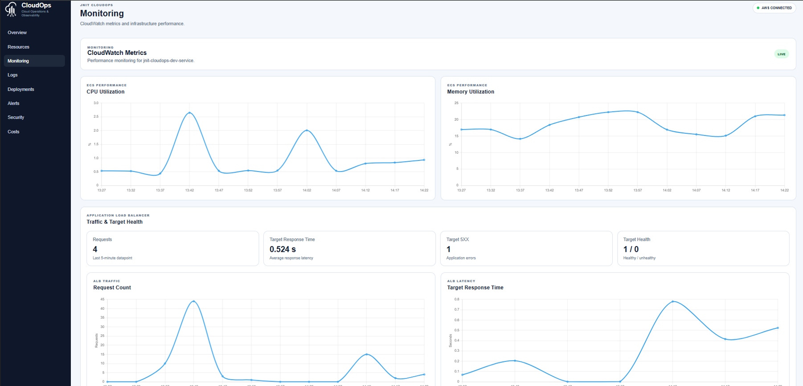

INDEPENDENT DIGITAL ENGINEERING JOHANNESBURG / SOUTH AFRICA
Cloud Solutions that growwith your business We design the experience, build the application and engineer the cloud behind it—one clear, connected delivery.
cloudops.jnit / monitoring CAPTURED EVIDENCE

DEPLOYMENT / 042 GitHub Actions → ECS Fargate
SERVICE HEALTH 1 / 1 Healthy target BUILT WITH Terraform AWS Docker
Cloud AWS · TERRAFORM · DEVOPS
Products WEB · MOBILE · WORKFLOWS
Experiences WEBSITES · COMMERCE · UX
SCROLL TO EXPLORE
DISCOVER → DESIGN → ENGINEER → OPERATE One partner. The whole digital layer. WHAT WE DO
From the first pixel Great digital work should feel coherent. Strategy, interface, application and infrastructure should move in the same direction. We bring them together.
JNIT DEMONSTRATION PROJECT JNIT CloudOps A clearer view of cloud operations. Built to bring deployment progress and system monitoring into one place.
Repeatable cloud setup Automated deployment Centralised monitoring View case study ↗ JNIT CLOUDOPS PROJECT PREVIEW ↗
DIGITAL EXPERIENCES
Not one look.Your look. Different audiences deserve different ideas. These working concepts show how far the visual language can move while clarity stays intact.
Explore all website concepts ↗ HOW WE WORK
Close collaboration. ● Get to the real problem. We listen, question and understand what success needs to look like before choosing the solution.
DISCOVER ● Make the direction visible. Architecture, experience and scope become concrete early enough for useful decisions.
DESIGN ● Build with the end in mind. Responsive, maintainable work that considers delivery, security and operations from the start.
ENGINEER ● Leave you with clarity. Validate the agreed outcome, document the system and make the handover understandable.
HANDOVER
YOUR NEXT MOVE / JNIT CLOUD SOLUTIONS
Let’s build somethingworth choosing.